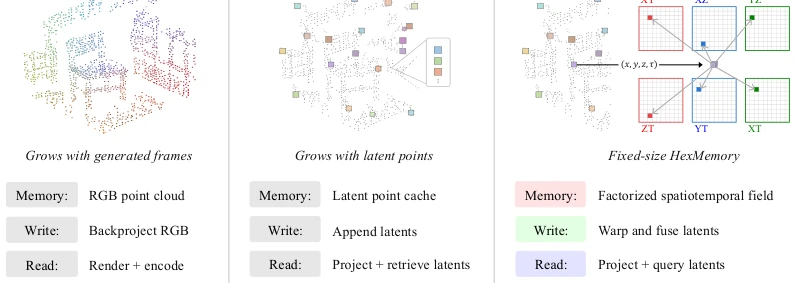
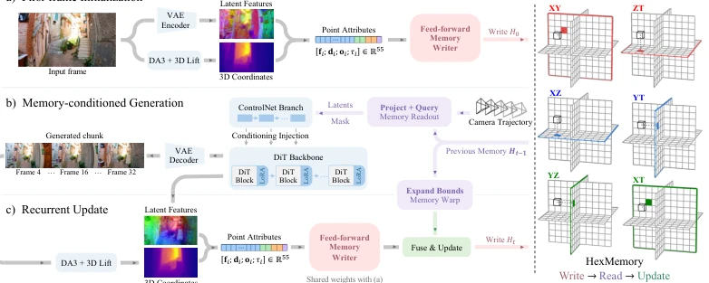
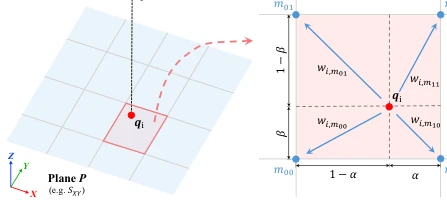
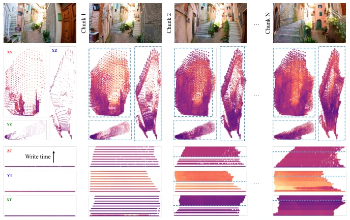
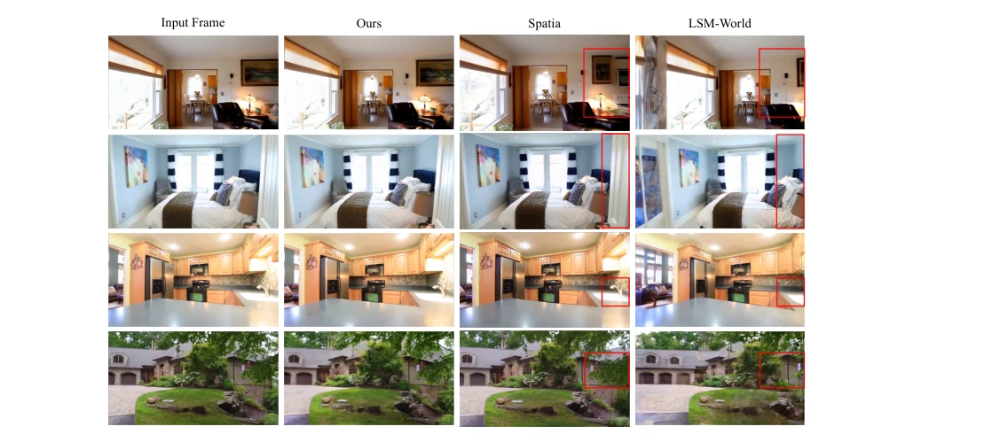
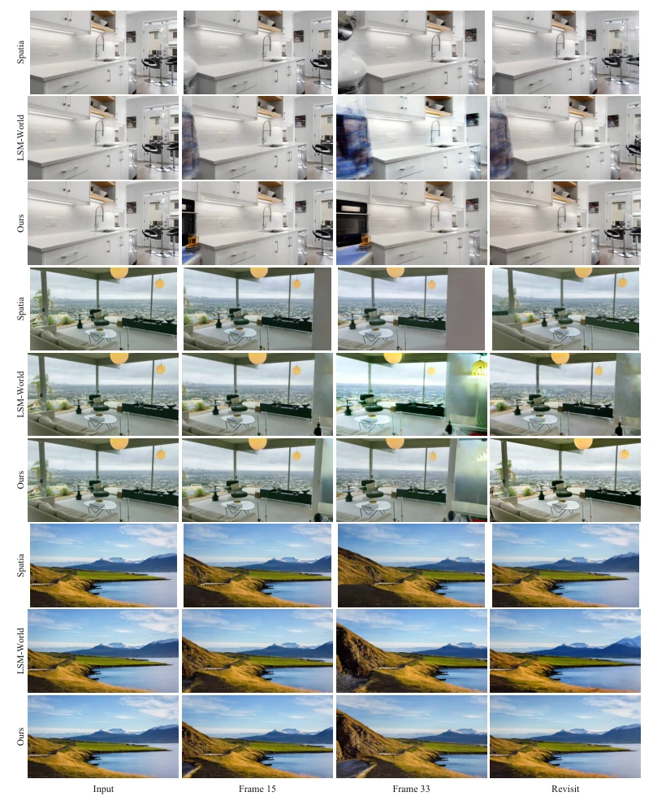
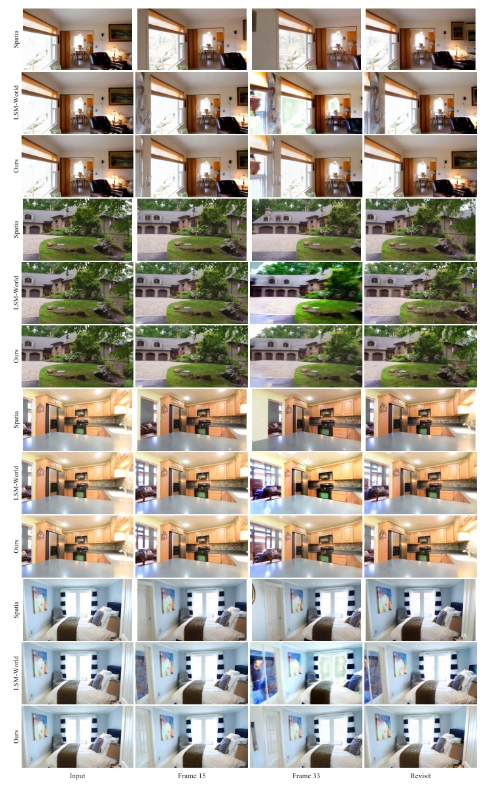
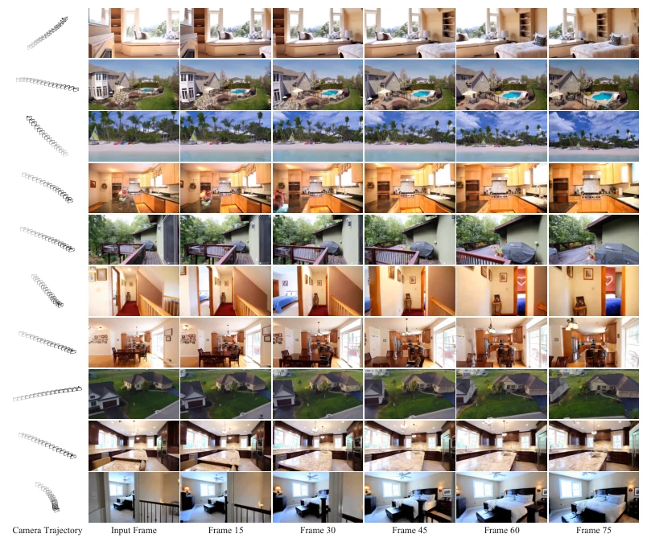
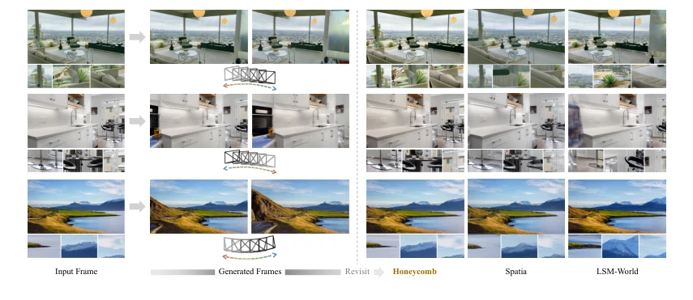
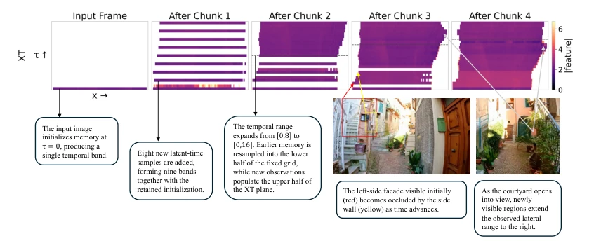

Honeycomb: Constant-Size Scene Memory Representation for Video World Models
Jack Wei Lun Shi, Kaichen Zhou, Haoyu Chen, Yufeng Weng, Keane Ong, Ruojin Cai abspdf
论文点评Review
Honeycomb 给视频世界模型来了个“内存守恒定律”，试图用六个固定平面硬扛场景记忆，拒绝像 Spatia 和 LSM-World 那样无限膨胀。这招“以不变应万变”确实有效，实验上在回看一致性（Revisit Consistency）上打赢了基线，这点很关键。但低秩分解真的能无损压缩所有细节吗？毕竟依赖深度估计来反投影 3D 点，万一深度错了，记忆是不是也跟着歪了？而且固定分辨率下，场景变大后分辨率会不会稀释？总之，是个聪明的工程 trick，但理论上限还得看后续验证，别到时候内存没省，幻觉先来了。
Honeycomb introduces a "law of memory conservation" to video world models, attempting to sustain scene memory with six fixed planes, refusing to expand infinitely like Spatia and LSM-World. This strategy of "using the unchanging to respond to the changing" proves effective; experimentally, it outperforms the baseline on Revisit Consistency, a critical point. However, can low-rank decomposition truly losslessly compress all details? After all, relying on depth estimation to back-project 3D points, if depth estimation fails, does the memory become distorted? Furthermore, under fixed resolution, will resolution dilute as the scene expands? In summary, it is a clever engineering trick, but the theoretical upper bound requires further verification; otherwise, memory savings may not materialize while hallucinations arise first.
研究动机Motivation
视频世界模型在长序列生成中面临场景一致性的挑战。当相机回到初始视角时，布局、外观和物体应与早期帧一致（Introduction）。现有方法如 Spatia (Zhao et al., 2026a) 和 LSM-World (Wang et al., 2026a) 通过存储 RGB 观察或潜在特征来维持一致性，但它们的存储需求随着生成过程累积而增加（Figure 2）。这导致存储成本不可控，且难以扩展。核心问题是：能否在不持续扩展特征记忆的情况下保留场景信息？Honeycomb 旨在解决这一存储膨胀问题，通过固定大小的低秩表示来融合新观测，避免每场景优化或重复处理历史（Abstract）。
Video world models face challenges in scene consistency during long-sequence generation. When the camera returns to the initial viewpoint, the layout, appearance, and objects should be consistent with early frames (Introduction). Existing methods such as Spatia (Zhao et al., 2026a) and LSM-World (Wang et al., 2026a) maintain consistency by storing RGB observations or latent features, but their storage requirements increase cumulatively with the generation process (Figure 2). This leads to uncontrolled storage costs and difficulty in scaling. The core question is: can scene information be retained without continuously expanding feature memory? Honeycomb aims to solve this storage expansion problem by fusing new observations through fixed-size low-rank representations, avoiding per-scene optimization or repeated processing of history (Abstract).

Figure 2: Memory design comparison. Spatia backprojects RGB observations into a point cloud, while LSM-World accumulates latent points. Honeycomb instead writes to HexMemory with fixed-size feature storage.
Honeycomb's overall process is divided into three stages: initialization, read-generate, and recursive update (Figure 3). First, input frames are encoded and lifted to world space, initializing HexMemory's six fixed-size feature planes (3 spatial, 3 spatiotemporal). During generation, the Memory Reader queries latent features from the planes, conditioning the DiT via a ControlNet branch to generate new segments. During writing, the Feed-forward Writer maps latent points of new segments to the planes, utilizing bilinear interpolation to distribute contributions. The key innovation lies in recursive update: when spatial or temporal boundaries expand, old planes are warped to new boundaries via bilinear interpolation, keeping grid dimensions unchanged. Old and new planes are fused via confidence-weighted pooling and corrected by a learned residual correction network (Eq. 6). This design avoids appending latent points like LSM-World and does not require per-scene optimization like HexPlane, achieving constant-time write costs (Section 3.4).

Figure 3: Overview of the Honeycomb pipeline. For scene-consistent video generation, we a) initialize a fixed-size HexMemory, b) read it to condition a generated chunk, and then c) write new observations back into the same tensors.

Figure 4: Bilinear splatting within the feed-forward writer. (a) Point pi maps to location qi on plane P and (b) its learned contribution cP i is distributed to four neighboring cells using bilinear weights wim. This operation is repeated for all six planes.

Figure 6: Visualization of HexMemory. Three spatial and three spatiotemporal planes are shown at initialization and after successive chunks. Dashed boundaries mark the extent of the previous memory after warping into the updated coordinate range.
Evaluated on WorldScore and RealEstate10K. Baselines include Spatia, LSM-World, and generic video models. Metrics cover generation quality (PSNR, SSIM, LPIPS) and closed-loop consistency (Flow error). Results show Honeycomb achieves a PSNR of 18.45 dB in RealEstate10K novel view synthesis, outperforming Spatia (15.58 dB) and LSM-World (17.46 dB) (Table 2). In WorldScore closed-loop evaluation, Flow error drops to 3.00 pixels, significantly better than Spatia's 6.64 pixels (Table 2). Ablation studies show that reducing plane resolution can significantly reduce storage (19.8 MB vs 73.9 MB), with little impact on consistency (Table 3). Recursive writing is approximately 240 times faster than direct optimization and maintains constant cost compared to replacement writers (Table 4).

Figure 5: Closed-loop comparison. Honeycomb preserves object appearance and scene layout, while Spatia and LSM-World show changes in furnishings, geometry, and texture.

Figure 7: Extended closed-loop comparisons on WorldScore. For each of the three examples, rows show Spatia, LSM-World, and Honeycomb, respectively.

Figure 8: Extended closed-loop comparisons on RealEstate10K. For each of the four examples, rows show Spatia, LSM-World, and Honeycomb, respectively.

Figure 9: Long-horizon novel-view synthesis on RealEstate10K. Each row shows the camera trajectory, input image, and five generated views for one example. Camera markers progress from gray to black over time and use a fixed viewing orientation relative to each input camera.
其他图片Other Figures

Figure 1: Revisiting a scene with constant-size memory. Given a single input frame and a camera trajectory that moves away and returns to the initial pose, Honeycomb gen- erates a video whose final frame is consistent with the input frame.

Figure 10: Temporal organization of the XT feature plane. The input image initializes memory at τ = 0, and the first chunk adds eight new latent-time samples. Subsequent updates expand the temporal range and resample the accumulated memory within a fixed- resolution grid. Dashed lines mark the previous temporal extent. The annotated RGB views illustrate changes in lateral visibility as the camera advances through the alley.